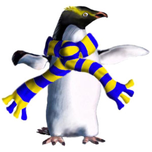

Polly's Travel Blog
Navigation
Home
Stories
Contact
Polly the Penguin 🐧

Stories about my life as a penguin!
Leaving home
Today I travel for Antarctica!
I will bring my favourite scarf.
blurred 2px
grayscaled
dimmed and reduced contrast
rotate hue 70deg=
contrast 150%
sepia of 20%
blurred 10px
inverted